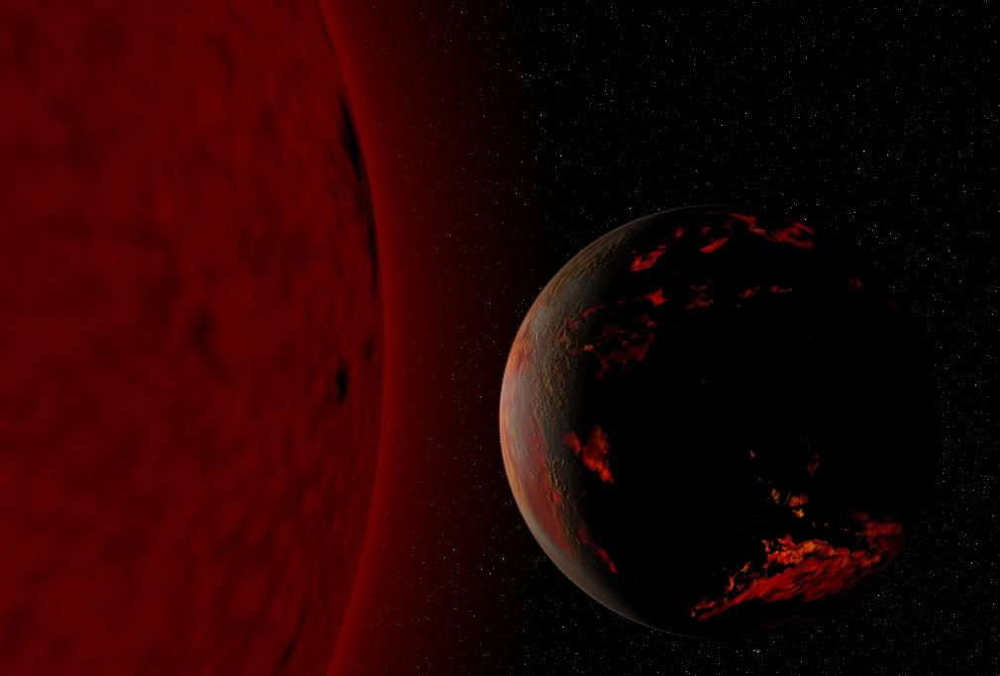
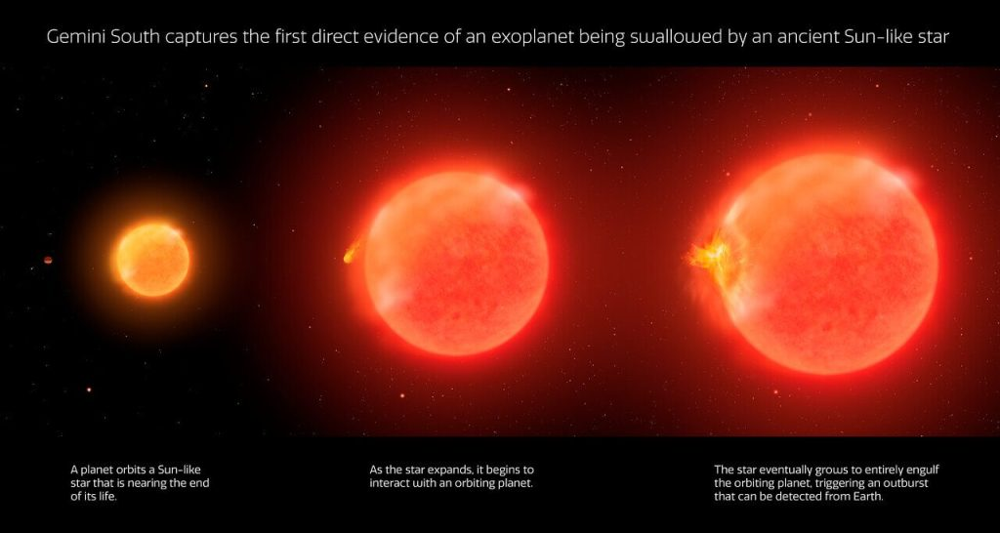

ဒီဖြစ်စဉ်မှာ သေဆုံးခါနီး အသက်ငင်နေပြီး ဖြစ်တဲ့ မိခင်ကြယ် ကြီးက သူ့ရဲ့ အရံဂြိုဟ် တစ်စင်းကို ဝါးမြို စားသုံးပြီး တစ်စစီ ဖျက်ဆီး ပစ်လိုက်ရာက ထွက်ပေါ်လာတဲ့ တောက်ပတဲ့ အလင်းရောင် တွေကို တွေ့မြင်ခွင့် ရခဲ့ကြတာ ဖြစ်ပါတယ်။
ဒီလို သဘာဝ ဖြစ်စဉ်မျိုး ရှိတယ် ဆိုတာကို သိပ္ပံ ပညာရှင်တွေ သီအိုရီထုတ်ပြီး ခန့်မှန်း ဟောကိန်း ထုတ်ထားတာတော့ ကြာခဲ့ပါပြီ။ ဒါပေမယ့် လက်တွေ့မှာ ဒါဟာ ပထမဆုံး အကြိမ် မျက်ဝါးထင်ထင် တွေ့မြင် လိုက်ရခြင်းပဲ ဖြစ်ပါတယ်။
အခုဖြစ်စဉ်ကို အသေးစိတ် လေ့လာခွင့် ရခဲ့တဲ့ အတွက် သိပ္ပံ ပညာရှင်တွေ အနေနဲ့ ကြယ်တစင်း သေဆုံးခါနီး အသက်ငင်နေ ချိန်မှာ သူ့ကို ပတ်နေတဲ့ အရံဂြိုဟ်တွေ ဘယ်လို ဘဝဆိုးမျိုးတွေနဲ့ ကြုံတွေ့ရမလဲ ဆိုတာနဲ့ ပါတ်သက်လို့ ပိုမို သေချာစွာ ခန့်မှန်းခွင့် ရလာစေမှာ ဖြစ်ပါတယ်။

{kind=link}
ဒီလို ကြယ်ကြီး ဖေါင်းကား လာတဲ့ အခါမှာ သူ့ရဲ့ လမ်းကြောင်းထဲမှာ ရှိသမျှ အရာ အားလုံးဟာ ဝါးမြိုဖျက်ဆီး စားသုံးပစ်ခြင်းကို ခံရပါတော့တယ်။ ဒီလို ဖျက်ဆီး ခံရတဲ့ အထဲမှာ သူ့ကို ပတ်နေတဲ့ အရံဂြိုဟ်တွေလဲ အပါအဝင် ဖြစ်ပါတယ်။
ဒီ့နောက်မှာတော့ အဆမတန် ဖေါင်းကားလာတဲ့ ကြယ်ကြီးရဲ့ အပေါ်ယံ အခွံဟာ အပြင်ကို ပူဖေါင်း ပေါက်သလို ပေါက်ကွဲလွင့်စင် ထွက်သွား ပါတော့တယ်။ ကြယ်ရဲ့ ဗဟိုအူတိုင် ကတော့ အတွင်းကို ပြိုကျသွားပြီး ကြယ်သေ အကြွင်းအကျန် တစ်ခုအဖြစ် ကျန်ရစ် ခဲ့ပါတယ်။
အရင်က လေ့လာ တွေ့ရှိမှုတွေမှာ ကြယ်က ဂြိုဟ်ကို မဝါးမြိုမီ ကာလ နဲ့ ဝါးမြိုပြီးစ ကာလ တွေကိုပဲ မှတ်တမ်းယူနိုင် ခဲ့ပါတယ်။ ကြယ်က ဂြိုဟ်ကို ဝါးမြိုနေချိန်ကိုတော့ မှတ်တမ်းယူထားနိုင်ခြင်း မရှိခဲ့ ပါဘူး။
အခု ပထမဆုံး မှတ်တမ်းယူနိုင်ခဲ့တဲ့ ဖြစ်စဉ်မှာ ပါဝင်တဲ့ ကြယ်ဟာ ကမ္ဘာကနေ အလင်းနှစ် ၁၂,၀၀၀ လောက် အကွာမှာ ရှိတဲ့ ကြယ်တစင်း ဖြစ်ပါတယ်။ ဒီကြယ်ကြီးရဲ့ အလင်းဟာ မူလ ရှိရင်းစွဲ အလင်းထက် အဆ ၁၀၀ လောက် ရုတ်တရက် လင်းလက် လာပြီးတဲ့ နောက်မှာ ပြန်လည် မှေးမှိန် သွားတာကို ရှာဖွေ တွေ့ရှိခဲ့တာ ဖြစ်ပါတယ်။
ဒါဟာ ကျွန်တော်တို့ နေ သက်တမ်း ကုန်ဆုံးသွားချိန်မှာ ကြုံတွေ့ရမယ့် အခြေအနေတွေကို ကြိုတင် ခန့်မှန်းထားချက်တွေနဲ့ သွားပြီး တူညီ နေပါတယ်။ ဒါ့ကြောင့် အခု တွေ့ရှိချက်ကို အခြေတည်ပြီး ကျွန်တော်တို့ နေရဲ့ သက်တမ်းကုန် ဆုံးချိန် (ထာဝရ နေဝင်ချိန်) မှာ ကြုံတွေ့လာရမယ့် အခြေအနေ တွေကို ယခုထက် ပိုပြီး တိတိကျကျ ကြိုတင် ခန့်မှန်းနိုင်မှာ ဖြစ်ပါတယ်။
“ကျွန်တော်တို့ဟာ ကမ္ဘာရဲ့ အနာဂါတ်ကို ကြိုမြင်နေရတာပါ” လို့ အမေရိကန် ပြည်ထောင်စု MIT တက္ကသိုလ်က နက္ခတ်ပညာရှင် တစ်ဦးဖြစ်တဲ့ Kishalay De က ရှင်းပြပါတယ်။

နေလို ကြယ်တစင်း အသက် သေဆုံးရတဲ့ ဖြစ်စဉ်ဟာ တကယ်တော့ အတော်လေး ကြမ်းတမ်းခက်ထန်တဲ့ ဖြစ်စဉ်တစ်ခု ဖြစ်ပါတယ်။ မစ်ကီးဝေး ဂလက်ဆီ အတွင်းက အခြား အသက်ငင်နေတဲ့ ကြယ်တွေနဲ့ သေဆုံးသွားတဲ့ ကြယ်တွေကို လေ့လာခြင်းကနေ ကျွန်တော်တို့ နေရဲ့ အနာဂါတ် ပျက်ဆီးချိန် ကိုလဲ မှန်းဆ နိုင်ခဲ့ ကြပါတယ်။
ကြယ်တစ်စင်း လောက်ကြွမ်းဖို့ ဆိုတာ ဟိုက်ဒြိုဂျင် ဓါတ်ငွေ့ လိုပါတယ်။ ကြယ်ရဲ့ ဗဟိုက ဟိုက်ဒြိုဂျင် ဓါတ်ငွေ့တွေ လောင်ကြွမ်းတဲ့ အခါ ထွက်လာတဲ့ စွမ်းအင်တွေဟာ ကြယ်ကို အပြင်ဖက်ကို တွန်းကန် ပေးထားပါတယ်။ တချိန်ထဲမှာ ကြယ်ရဲ့ ဓါတ်ငွေ့တွေ အချင်းချင်း ဆွဲတဲ့ gravity ကြောင့် ကြယ်ရဲ့ ဒြပ်ထုတွေဟာ ဗဟိုကို အတင်း ဖိတွန်း နေကြ ပြန်ပါတယ်။
ဒီလို အဏုမြူ ဓါတ်ပြုလောင်ကျွမ်းမှုကြောင့် အပြင်ကို တွန်းတဲ့ တွန်းကန်အားနဲ့ ဆွဲငင်အားကြောင့် အတွင်းကို ဖိတွန်းနေတဲ့ အား နှစ်ခု ညီနေတဲ့ အတွက် ကြယ်ဟာ အတွင်းကိုလဲပြိုကျ မသွားသလို အပြင်ကိုလဲ လွင့်စင်ပေါက်ကွဲ မထွက်သွားတာ ဖြစ်ပါတယ်။
တဖြည်းဖြည်းနဲ့ ကြယ်ရဲ့ ဗဟိုမှာ ဟိုက်ဒြိုဂျင် လောင်စာ ကုန်ခမ်းလာတဲ့ အခါမှာ ဒီ အတွင်း နဲ့ အပြင် အချင်းချင်း ကန်ထားတဲ့ အားမျှခြေဟာ ပျက်ယွင်း သွားပါတယ်။
ဒီလို ဖြစ်လာတဲ့ အခါမှာ ဗဟိုချက်ဟာ အတွင်းကို ကျွံဝင် လာပါတယ်။ ဒီလို ကျွံဝင်လာတာနဲ့ တပြိုင်ထဲမှာ သူ့အတွက် ဆက်လက်လောင်ကျွမ်းဖို့ လိုအပ်တဲ့ ဟိုက်ဒြိုဂျင် လောင်စာတွေကို အပြင်လွှာ တွေကနေ ဆွဲယူ ပါတော့တယ်။ ဒီလို အဆွဲခံ ရတဲ့ အပြင်လွှာက ဟိုက်ဒြိုဂျင် တွေဟာ အူတိုင် နဲ့ အပြင်လွှာ ကြားထဲမှာ စုမိပြီး လောင်ကျွမ်း (အဏုမြူ ဓါတ်ပြုမှုဖြစ်) နေတဲ့ အလွှာသစ် တစ်ခုအဖြစ် ဖြစ်ပေါ်လာ ပါတယ်။
ဒီ အလွှာသစ်က ထွက်လာတဲ့ အပူတွေဟာ သူ့ရဲ့ အပြင်က အကာကို တွန်းထုတ် ပစ်ပါတယ်။ ဒီလို အပြင်ကို တွန်းတဲ့ တွန်းကန်အားကြောင့် အပြင်လွှာဟာ မူလ ရှိရင်းစွဲထက် အဆပေါင်း များစွာ ပိုကြီးလောအောင် ဖေါင်းကား လာပါတယ်။
ဒီအချိန်မှာဆိုရင် အသက်ငင်နေပြီဖြစ်တဲ့ ကြယ်ကြီးဟာ မူလ ရှိရင်း အရွယ်ထက် အဆရာချီအောင် ပိုပြီး ကြီးလာပါတယ်။ ဒီလို ကြီးလာတဲ့ ကြယ်ရဲ့ အပြင်ဆုံး အလွှာဟာ ဗဟိုနဲ့ အရမ်း ဝေးသွားတာမို့ သူ့ရဲ့ အပူချိန် ကလဲ ကျဆင်း သွားပါတယ်။ (ကြယ်မှာ အပူကို ထုတ်ပေးတာက ဗဟိုအူတိုင်ကပဲ ထုတ်ပေးတာ ဖြစ်ပါတယ်။ အပြင်လွှာ တွေက ဒီ အပူကို တဆင့်ခံ အနေနဲ့ လက်ခံ ရရှိတာ ဖြစ်ပါတယ်။)
ဒီလို ပြင်ပအလွှာရဲ့ အပူချိန် ကျဆင်းလာတာမို့ ကြယ်ရဲ့ အရောင်ဟာ မူလ အဖြူကနေ အဝါရောင်၊ ဒီ့နောက် အနီရောင် အဖြစ် ပြောင်းလဲ သွားပါတယ်။ ဒါကြောင့် သူ့ကို ဧရာမ ကြယ်နီကြီး (Red Giant) လို့ ခေါ်ကြတာ ဖြစ်ပါတယ်။
ဒီလို အရွယ်အစား အဆမတန် ကြီးမားလာတဲ့ ကြယ်နီကြီးဟာ သူ ကြီးထွားလာ လမ်းကြောင်းမှာ ရှိနေတဲ့ အရာ အားလုံးကို ဝါးမြိုစားသုံး ပစ်မှာ ဖြစ်ပါတယ်။ ကျွန်တော်တို့ နေအဖွဲ့အစည်း မှာတော့ ဒီလို အဖြစ်မျိုးဟာ နောင် လာမယ့် နှစ်သန်း ထောင်ဂဏန်းလောက် အကြာမှာ ဖြစ်လာမယ်လို့ ခန့်မှန်း ရပါတယ်။ ဒီလို ဖြစ်လာတဲ့ အချိန်မှာ နေ ဟာ ဗုဒ္ဓဟူးဂြိုဟ် ( Mercury)၊ သောကြာဂြိုဟ် (Venus) နဲ့ ကမ္ဘာ (Earth) တို့ကို ဝါးမြို သွားမှာ ဖြစ်ပါတယ်။
အခု ရှာဖွေ တွေ့ရှိမှုမှာ သိပ္ပံ ပညာရှင် တွေဟာ ကြယ်က ဂြိုဟ်ကို ဝါးမြိုတာကို ရှာဖွေဖို့ ရည်ရွယ်ခဲ့တာတော့ မဟုတ်ပါဘူး။ သူတို့ဟာ Zwicky Transient Telescope ကြီးကနေ ရိုက်ကူးထားခဲ့တဲ့ ကောင်းကင် ဓါတ်ပုံ တွေကို ပြန်လည် စစ်ဆေးရင်းက အမှတ်မထင် တွေ့ရှိခဲ့ကြတာ ဖြစ်ပါတယ်။
ဒီလို စစ်ဆေးရင်းကနေ ကောင်းကင်က ကြယ်တစင်းဟာ ရုတ်တရက် သီတင်းတစ်ပတ်လောက် အတွင်းမှာ အဆ ၁၀၀ လောက် လင်းထိန် သွားတာကို သတိပြု မိခဲ့ ကြပါတယ်။ ဒါဟာ အရင်က တွေ့ဖူးခဲ့တဲ့ ကြယ်ဖြစ်စဉ် တွေနဲ့ မတူညီတဲ့ ဖြစ်စဉ်တခု ဖြစ်ပါတယ်။
ဒီ ကြယ်က ဖမ်းယူထားတဲ့ အချက်အလက်တွေကိ အသေးစိတ် စစ်ဆေးကြည့်တဲ့ အခါမှာတော့ ဒီကြယ်ရဲ့ ဓါတု ဖွဲ့စည်းပုံနဲ့ ပါတ်သက်ပြီး ထူးခြားမှုတွေကို တွေ့ရှိ လာရပါတယ်။ ကြယ်ထဲမှာ ပုံမှန် တွေ့နေကျ ဟိုက်ဒြိုဂျင်နဲ့ အောက်ဆီဂျင် တွေတင် မကပဲ အပူချိန် လျှော့နည်းတဲ့ ရပ်ဝန်းမှာ တွေ့ရလေ့ ရှိတဲ့ တိုက်တေနီယံ အောက်ဆိုဒ် နဲ့ ဗနေဒီယံ အောက်ဆိုဒ် (titanium oxide and vanadium oxide) ဓါတ်တွေကိုပါ ရှာဖွေ တွေ့ရှိ ခဲ့ရပါတယ်။
ဒီ ကြယ်ကို Palomar Observatory နက္ခတ်မျှော်စင်ကနေ ဆက်လက် အနီးကပ် လေ့လာမှု ပြုလုပ် ခဲ့ပါတယ်။ ဒီအခါမှာလဲ မူရင်း တွေ့ရှိချက်အတိုင်း ထူးခြားတဲ့ ဓါတု ဖွဲ့စည်းပုံ တွေကိုပဲ တွေ့ရ ပြန်ပါတယ်။
ဒီအချက်က ဘာကို ပြနေလဲ ဆိုတော့ ဒီ ကြယ်ဟာ ကြယ်အမွှာစုံတွဲ တစ်ခု မဟုတ်ဘူး ဆိုတာပဲ ဖြစ်ပါတယ်။ ဒါဆို ဒီလို ထွက်ပေါ်လာတဲ့ တောက်ပတဲ့ အလင်းဟာ ဘာလဲဆိုတဲ့ မေးခွန်း ပေါ်လာပါတယ်။
သာမန် ကြည့်ရင်တော့ ဒီလို ရုတ်တရက် အရောင်ထတောက်တာသည် ကြယ်အမွှာစုံတွဲ နှစ်ခု တစ်ခုနဲ့ တစ်ခု ဝင်တိုက်မိရာက ထွက်ပေါ်လာတဲ့ အလင်းနဲ့ ဆင်ဆင် တူနေပါတယ်။ ဒါပေမယ့် ထွက်လာတဲ့ စွမ်းအင်ခြင်း ကျတော့ ကွာခြားနေ ပြန်ပါတယ်။ အခု အလင်းတောက်ပမှုမှာ ထွက်ပေါ်လာတဲ့ စွမ်းအင်ဟာ ကြယ်အမွှာတွေ တိုက်မိရာက ထွက်လာတဲ့ စွမ်းအင်ရဲ့ အပုံ ၁၀၀၀ ပုံ ၁ ပုံလောက်ပဲ ရှိနေပါတယ်။
ဆိုလိုတာကတော့ ဒီကြယ်နဲ့ တိုက်မိတဲ့ အရာဟာ ကြယ်တစင်းရဲ့ ဒြပ်ထုရဲ့ အပုံ ၁၀၀၀ ပုံ ၁ ပုံလောက်ပဲ ရှိတယ် ဆိုတာပဲ ဖြစ်ပါတယ်။ တိုက်ဆိုင်စွာပဲ ကျွန်တော်တို့ရဲ့ ကြာသပတေး ဂြိုဟ်ဟာလဲ နေရဲ့ အပုံ ၁၀၀၀ ပုံ ၁ ပုံလောက်ပဲ ရှိိနေပါတယ်။
ဒါဆို အဖြေက ရှင်းနေပါတယ်။ ဒီ ကြယ်ထဲ ဝင်တိုက်မိတဲ့ အရာဟာ ကြာသပတေးဂြိုဟ် အရွယ်လောက် ရှိတဲ့ ဂြိုဟ်ကြီးတစ်လုံး ဖြစ်တယ် ဆိုတာပါပဲ။
အသေးစိတ် တွက်ချက်မှုတွေ အရ ကြယ်က ဝါးမြိုလိုက်တဲ့ ဂြိုဟ်ရဲ့ ဒြပ်ထုဟာ အကြီးဆုံး ဆိုရင် ဂျူပီိတာ ရဲ့ ဒြပ်ထုရဲ့ ၁၀ ဆ အထိ ရှိနိုင်မယ်လို့ ဆိုပါတယ်။ ဒီ ဂြိုဟ်ကြီးဟာ တဖြည်းဖြည်း ကြီးထွားလာနေတဲ့ ကြယ်နီကြီးရဲ့ လမ်းကြောင်းမှာ ရှိနေတာမို့ ဒီကြယ်နီကြီးရဲ့ ဝါးမြို ပစ်လိုက်ခြင်းကို ခံလိုက်ရတာပါ။
ဒီလို ဝါးမြိုလိုက် တဲ့ ဖြစ်စဉ်ကို တွေ့မြင် ရတာဟာ ဂြိုဟ်တွေရဲ့ ဘဝဖြစ်စဉ်နဲ့ ပတ်သက်လို့ အရေးပါတဲ့ အချက်ကို သိရှိ လိုက်ရတာပဲ ဖြစ်ပါတယ်။ အရင်က ဒီလို အဖြစ်မျိုးကို သီအိုရီ အနေနဲ့သာ ပညာရှင်တွေ ဖော်ထုတ် နိုင်ခဲ့ပြီး လက်တွေ့ မြင်တွေ့ ကြရခြင်း မရှိခဲ့ ပါဘူး။ ဒီတော့ အခု ဖြစ်စဉ်ဟာ နက္ခတ် ပညာရှင်တွေ ဆယ်စုနှစ် များစွာ မက်ခဲ့တဲ့ အိမ်မက် အကောင်အထည် ပေါ်လာခြင်းပဲ ဖြစ်ပါတယ်။
Ref: A Star Was Caught Swallowing a Planet in an Astronomical First | Science Alert